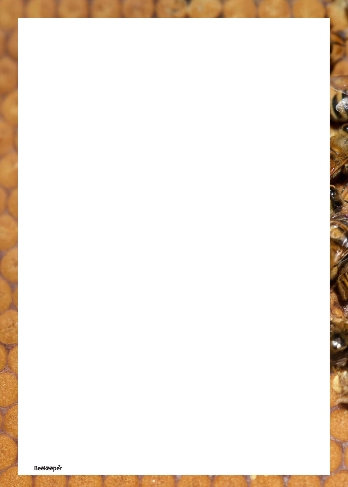

the transition of more bees to foraging, to support the brood
(Buhler, Lanzrein, and Wille, 1983).
Brood Pheromone
A 2001 study found that the presence of brood pheromone
decreases juvenile hormone in nurse bees. This effectively ties
nurse bees to their jobs by delaying their transition to outdoor
jobs. This relationship feels very intuitive, but the researchers
admit that the link is not a strong one and that brood phero-
mone might have a primer effect (indirect and slower acting),
and not a releaser effect (direct and faster acting) (Le Conte,
Mohammedi, Robinson, 2001).
Queen Pheromone
In 1992, another group of researchers found that the pres-
ence of a mated queen decreases juvenile hormone. Again, this
is intuitive because as it could maintain more bees as nurses
to care for the brood the queen is producing. In the absence
of queen pheromone, JH levels rise. The presence of queen
pheromone was found to have a primer effect similar to the
presence of brood pheromone, but the researchers suggest
that the relationship between queen pheromone and JH could
be important to maintaining balance within the colony (Kaatz,
Hildebrandt, and Engels, 1992).
Brood and queen pheromone would both be present in
abundance in a queenright colony, lowering levels of juve-
nile hormone in young bees who move around the hive in
closest proximity to the brood and queen. This would help
to tie them to their essential roles inside the hive. However,
in hopelessly queenless colonies, JH levels could rise, leading
bees to become more defensive (more responsive to alarm
pheromone) and more likely to leave the hive to guard and/or
forage. The impact of temperature and CO2 has the opposite
effect on JH, lowering it when brood conditions are not main-
tained. This might help maintain some kind of fragile balance
in queenless hives.
Pesticides
Certain neonicotinoids can cause JH to spike, effectively
rushing the transition from nurse bee to forager. The research-
ers who conducted this study in 2021 also found that the
unnatural levels of juvenile hormone caused by exposure to
neonicotinoids can cause problems with caste differentiation
and queen quality (Honghong et al., 2021).
While most neonicotinoids are advertised as relatively safer
for bees, it is these indirect impacts that could cause havoc on
the beekeeping industry in ways that are difficult to link directly
back to the pesticides themselves.
Ongoing Research
There is still a lot that we don’t know about juvenile hor-
mone and its unique role in honey bees, including how external
factors might influence colony behaviour and physiology, by
impacting JH levels. Questions for future research include:
how JH influences bees’ ability to be flexible in their division of
labour, what role JH might have in visual/spatial learning that
could help explain its link with foraging and flight, and what
impact other pesticides can have on queen quality and worker
behaviour due to their interaction with juvenile hormone.
In summary, juvenile hormone induces essential changes in
honey bees, both in their larval development on later in adult
life. Various conditions, both internal to the hive and external,
as well as both natural and human-made, act on juvenile hor-
mone levels in both stages of life and can induce behavioural
and physiological changes. This continues to be an important
and exciting area of honey bee research.
This article first published in the Winter 2024-2025 issue
of BeesCene, the magazine of the BC Honey Producers’
Association.
References
Bühler, Adrian, B. Lanzrein and H. Wille. “Influence of temperature and
carbon dioxide concentration on juvenile hormone titre and dependent
parameters of adult worker honeybees.” Journal of insect physiology
(1983): 885-893.
De Souza, Daiana A, Klaus H Hartfelder and David R Tarpy. “Effects of
larval Age at Grafting and Juvenile Hormone on Morphometry and
Reproductive Quality Parameters of in Vitro Reared Honey Bees
(Hymenoptera: Apidae).” Journal of Economic Entomology (2019): 2030-
2039.
Fahrbach, Susan E. and Gene E. Robinson. “Juvenile Hormone, Behavioral
Maturation, and Brain Structure in the Honey Bee.” Developmental
Neuroscience (1996): 102-114.
Harano, Ken-ichi. “Effects of juvenile hormone analog on physiological and
behavioral maturation in honeybee drones.” Apidologie (2013).
Kaatz, Hans-Hinrich, Herbert Hildebrandt and Wolf Engels. “Primer effect
of queen pheromone on juvenile hormone biosynthesis in adult worker
honeybees.” Journal of Comparative Physiology B (1992): 588-592.
Le Conte, Yves, Arezki Mohammedi and Gene E. Robinson. “Primer effects
of a brood pheromone on honeybee behavioural development.”
Proceedings of the Royal Society of London, Series B: Biological Sciences
(2001): 163-168.
Li, Honghong, et al. “Juvenile hormone and transcriptional changes in
honey bee worker larvae when exposed to sublethal concentrations of
thiamethoxam.” Ecotoxicology and Environmental Safety (2021): 1127-
1144.
Schulz, David J., Joseph P. Sullivan and Gene E. Robinson. “Juvenile
Hormone and Octopamine in the Regulation and Division of Labor in
Honey Bee Colonies.” Hormones and Behavior (2002): 222-231.
Sullivan, Joseph P., et al. “Juvenile Hormone Paces Behavioral
Development in the Adult Worker Honey Bee.” Hormones and Behavior
(2000): 1-14.
12 |
| Vol. 127 | No. 4